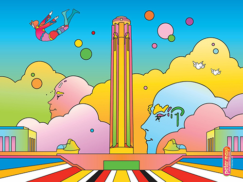
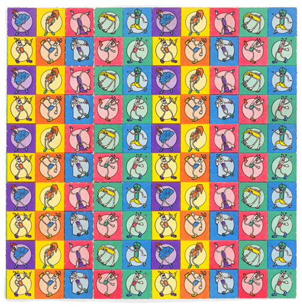

Psychedelic style is inspired by psychedelic experiences and hallucinations known to follow the ingestion of psychoactive drugs such as LSD and psilocybin... see more>

Where is it come from
The psychedelic art movement is similar to the surrealist movement in that it prescribes a mechanism for obtaining inspiration. Whereas... see more>
1960’s counterculture
Leading proponents of the 1960s psychedelic art movement were San Francisco poster artists such as: Rick Griffin, Victor Moscoso, Bonnie MacLean, Stanley Mouse & Alton Kelley, and Wes Wilson. Their psychedelic rock concert posters were inspired by Art Nouveau, Victoriana, Dada, and Pop Art. see more>

Blotter papper
More about influence LSD – blotter papper see more>